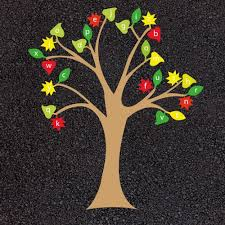
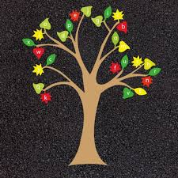

Below you can my some example of my resent project.Check out my complete project and portfololio.Have project which you like to discus? Lets ,make something together
Think and Asked
Transvarse of Tree
Todo List
Think and Asked
Transvarse of Tree
Todo List
The QuestionAnswerContract is designed to create a decentralized Q&A platform where students can ask questions and teachers can provide answers in exchange for a fee. By leveraging blockchain technology, this contract ensures transparency, immutability, and direct financial transactions without intermediaries.
I have made an program on tree inorder,preorder,postorder. If you diid not want to increase the tree put -1 in the data.
I made an webiste for adding todo list using javascript,Htmland CSS.
 
